السلسلة 36
السيارة (صنف B) · 40 سؤال. كل سؤال فيه الصورة والصوت. اختار الجواب (ولا جوج إلا كانو صحاح)، ورك على «تأكيد» باش تشوف واش صبتي.
- 40سؤال
- 32باش تنجح
- 1 – 4جواب واحد ولا أكثر
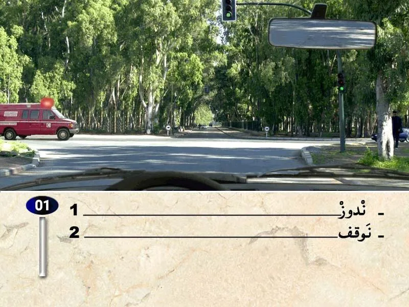
الكلافيي: 1–4 للجواب، Enter للتأكيد وللسؤال الجاي.
السلسلة 36 · النتيجة ديالك
0 / 40
السلسلة 36
السيارة (صنف B) · 40 سؤال، بالصوت، مع الجواب الصحيح والشرح.
السؤال 1
بيّن الجواب
الجواب الصحيح: 2
سيارة الإسعاف في مهمّة وهذا واضح من خلال ضوء التّنبيه بالأحمر الذي يشتغل فوقها، عندما تكون سيارة الإسعاف في مهمّة استعجالية فالأولوية لها على الرّغم من أن الإشارة الضوئية خضراء. إذن في هذه الحالة يجب عليّ الوقوف والسّماح لسيارة الإسعاف بالمرور.
السؤال 2
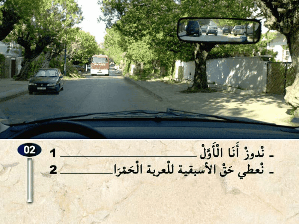
بيّن الجواب
الجواب الصحيح: 2
على الرغم من وجود سيارة متوقّفة في جهة سيارة المطافئ فيجب علي إعطاء حق الأسبقية لسيارة المطافئ لأنها في مهمَّة استعجالية كما تبين الأضواء الحمراء التي تشتغل فوقها.
السؤال 3
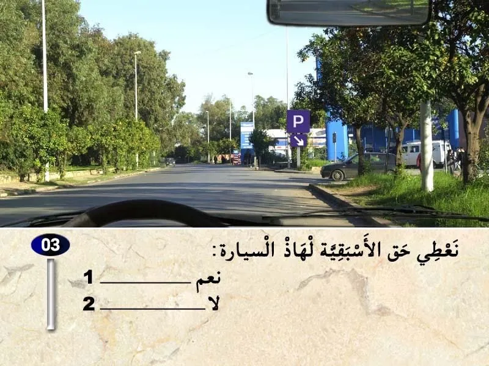
بيّن الجواب
الجواب الصحيح: 2
السيّارة المتواجدة على اليمين فهي تخرج من موقف سيارات (لم تكن في حالة سير) كانت متواجدة في مكان خاص ويجب عليها التوقف. إذن في هذه الحالة لا أقوم بإعطاء حق الأسبقية للسّيارة المتواجدة على اليمين.
السؤال 4
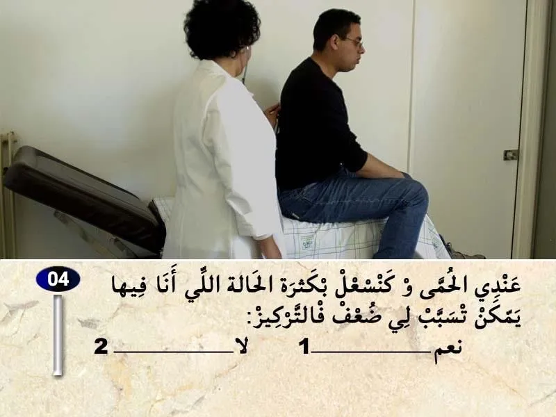
بيّن الجواب
الجواب الصحيح: 1
بما أنني في حالة صحّية غير جيّدة، فبطبيعة الحال سوف يسبب لي هذا الأمر قلّة في التّركيز أثناء السّياقة.
السؤال 5
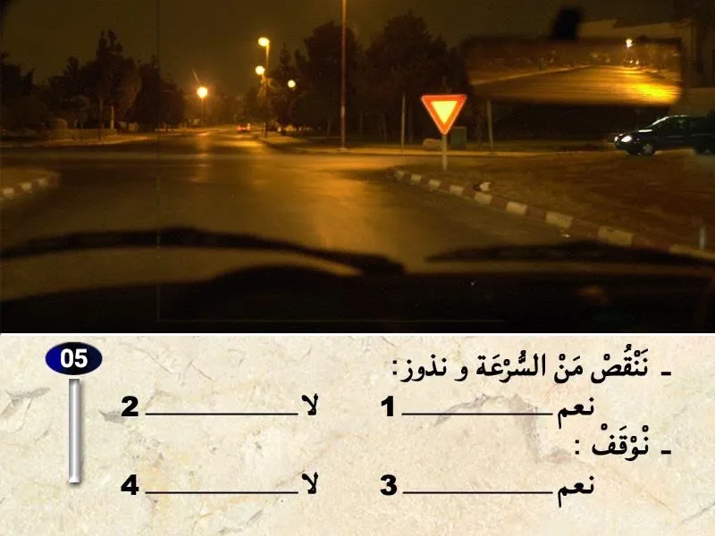
بيّن الجواب
الجواب الصحيح: 2 و 3
العلامة الطّرقية تعني أنه ليس لدي حق الأسبقية في هذا الملتقى الطّرقي، وهذا يعني على أنه يجب عليّ إعطاء حق الأسبقية للعربات القادمة من الجهة اليمنى وكذلك للعربات القادمة من الجهة اليسرى، في هذه الحالة فلا يجب عليّ الإنقاص من السّرعة والمرور لأنه توجد سيارة على اليمين ويجب عليّ أن أسمح لها بالمرور أوّلا بما أنه ليس لي حق الأسبقية، وأيضا أقوم بالوقوف لكي أسمح للسيّارة بالمرور أوّلا.
السؤال 6
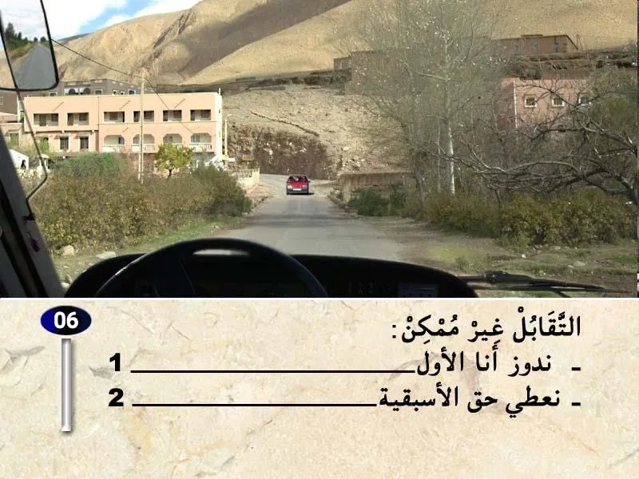
بيّن الجواب
الجواب الصحيح: 2
التّقابل غير ممكن معناه أنه لا يمكنني المرور أنا والسيّارة مع بعض في هذه الطّريق الضيّقة، يمكن أن يمّر واحد فقط، في هذه الحالة بما أن السيّارة التي أمامي هي التي وصلت أوّلا إلى الطّريق الضيّقة (يمكن أن تكون تلك قنطرة) فيجب عليّ أن أعطيها حق الأسبقية وأن أسمح لها بالمرور أوّلا.
السؤال 7
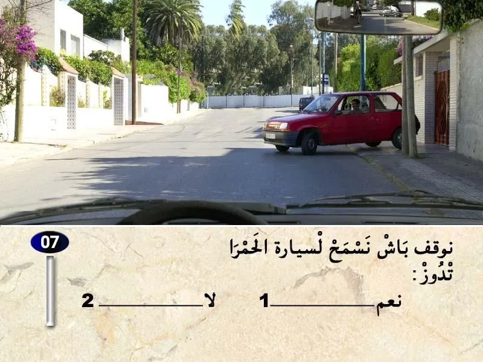
بيّن الجواب
الجواب الصحيح: 2
بما أن السيّارة تخرج من مكان خاص (كراج) فيجب عليها الوقوف وإعطائي حق الأسبقية في المرور أوّلا. إذن في هذه الحالة ليس من الواجب عليّ الوقوف والسّماح للسيّارة بالمرور.
السؤال 8
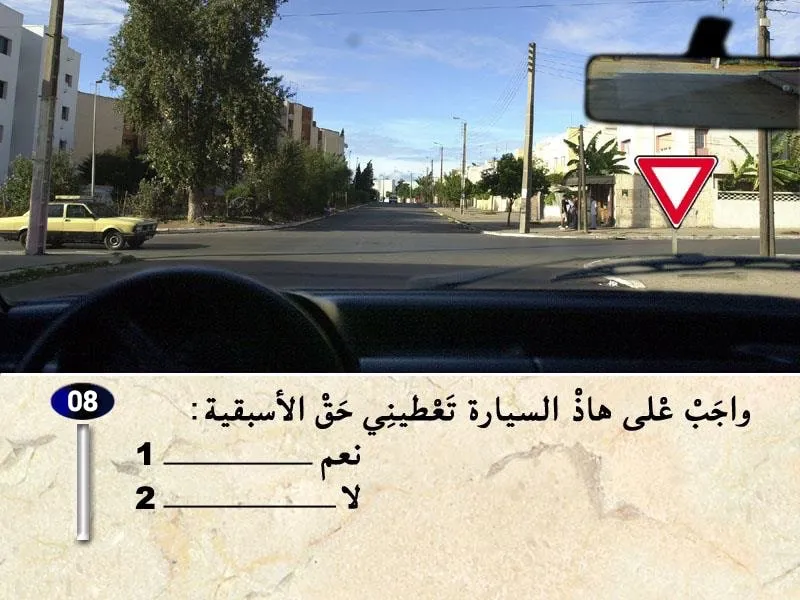
بيّن الجواب
الجواب الصحيح: 2
العلامة الطّرقية تعني أنه ليس لديّ حق الأسبقية في هذا الملتقى الطّرقي، وهذا يعني على أنه يجب عليّ إعطاء حق الأسبقية للعربات القادمة من الجهة اليمنى وكذلك للعربات القادمة من الجهة اليسرى. في هذه الحالة ليس من الواجب على السيّارة الموجودة على اليسار إعطائي حق الأسبقية، لأنه الأسبقية لها.
السؤال 9
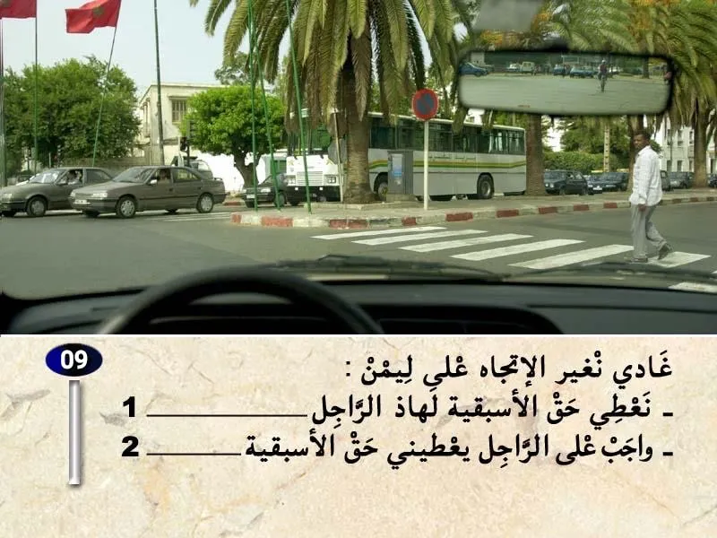
بيّن الجواب
الجواب الصحيح: 1
سوف أقوم بالانعطاف على اليمين، وكما نلاحظ يوجد ممر للرّاجلين وأيضا يوجد راجل مندمج في ممر الرّاجلين. إذن يجب عليّ الوقوف و إحترام ممر الرّاجلين وإعطاء حق الأسبقية للرّاجل بالمرور أوّلا.
السؤال 10
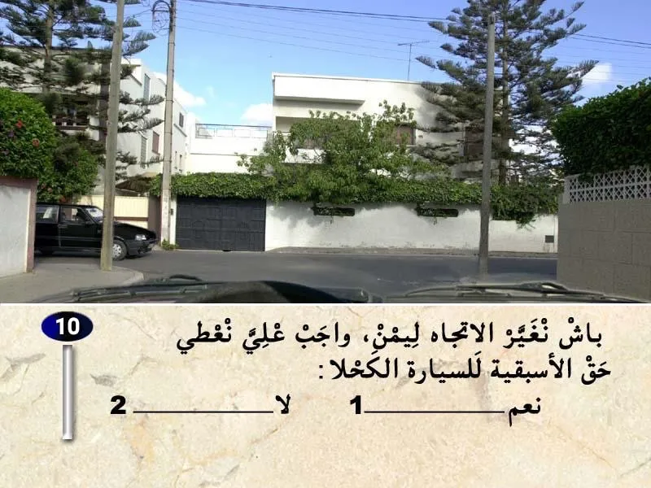
بيّن الجواب
الجواب الصحيح: 2
نتواجد قرب ملتقى الطّرق، وبما أنه لا توجد علامات طرقية إذن القاعدة تقول الأسبقية للعربات القادمة من الجهة اليمنى، إذن في هذه الحالة بما أنني أتواجد على يمين السيّارة السوداء فيجب عليها الوقوف وإعطائي حق الأسبقية. إذن لكي أقوم بالانعطاف على اليمين ليس من الواجب عليّ إعطاء حق الأسبقية للسيّارة السّوداء.
السؤال 11
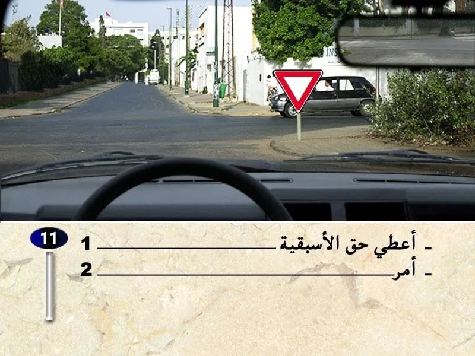
بيّن الجواب
الجواب الصحيح: 1
العلامة الطّرقية تعني أنه ليس لديّ حق الأسبقية في هذا الملتقى الطّرقي، وهذا يعني على أنه يجب عليّ إعطاء حق الأسبقية للعربات القادمة من الجهة اليمنى وكذلك للعربات القادمة من الجهة اليسرى. في هذه الحالة يجب عليّ إعطاء حق الأسبقية.
السؤال 12
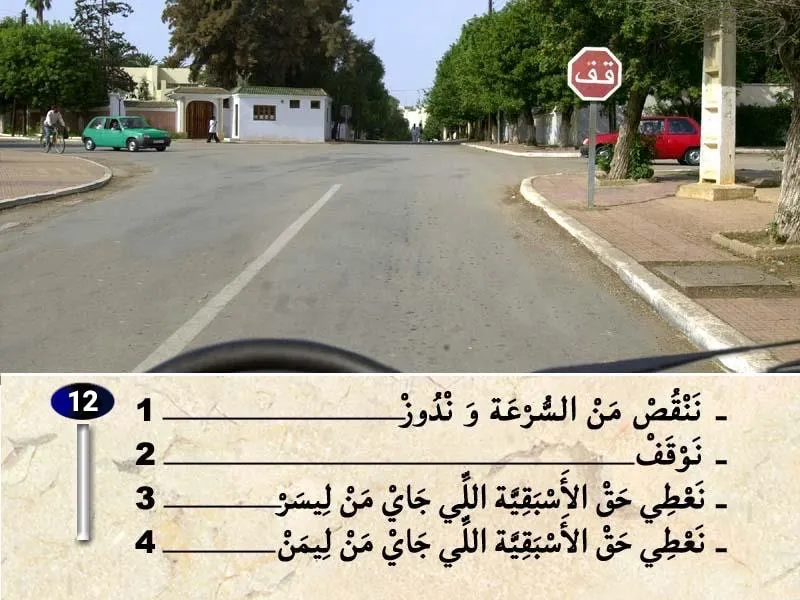
بيّن الجواب
الجواب الصحيح: 2 و 3 و 4
أتواجد قرب ملتقى الطّرق، توجد علامة قف وهذا يعني على أن الوقوف إجباري في ملتقى الطّرق، وبما أنه يوجد لديّ علامة قف فيجب عليّ في هذه الحالة الوقوف وإعطاء حق الأسبقية للسيارات القادمة من الجهة اليمنى وكذلك السيارات القادمة من الجهة اليسرى.
السؤال 13
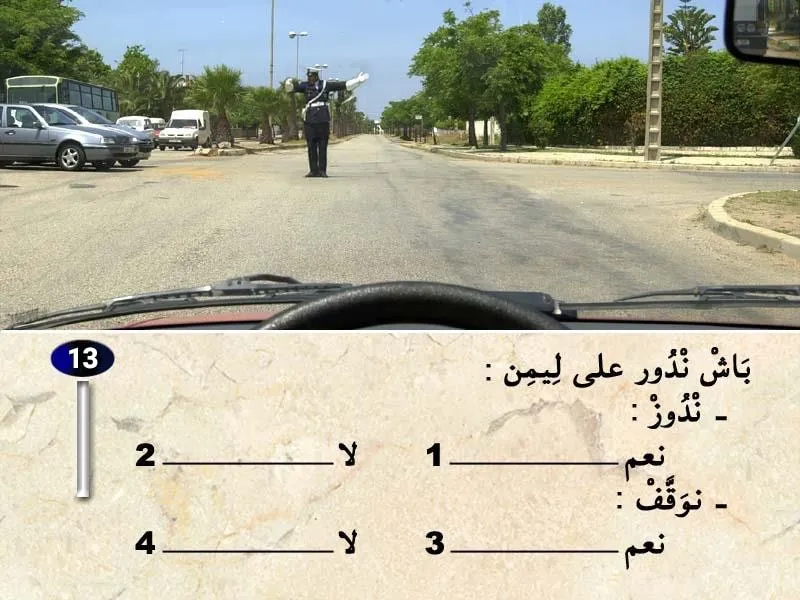
بيّن الجواب
الجواب الصحيح: 2 و 3
عندما يكون شرطي المرور يعطيني بالظّهر أو يقف أمامي مباشرة فهذا يعني الوقوف بالنسبة لي ويجب عليّ الوقوف وانتظار إشارته للمرور. في هذه الحالة بما أن شرطي المرور يقف أمامي مباشرة فيجب عليّ الوقوف مهما كان اتّجاهي.
السؤال 14
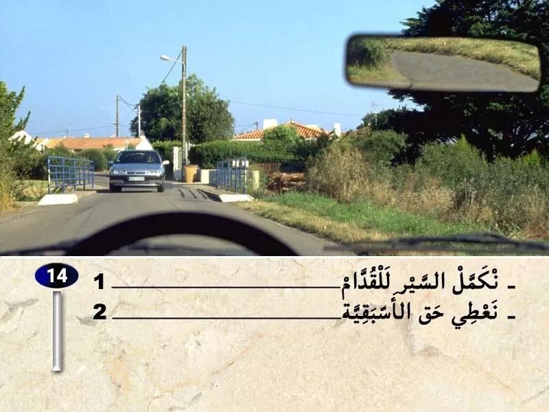
بيّن الجواب
الجواب الصحيح: 2
بما أن السيّارة التي أمامي توجد في القنطرة ولكي أقوم بتسهيل عملية التّقابل فيجب عليّ إعطائها حق الأسبقية. (لا توجد قاعدة في القنطرة، العربة التي تتواجد أولا قرب القنطرة هي التي لديها حق أسبقية المرور أوّلا).
السؤال 15
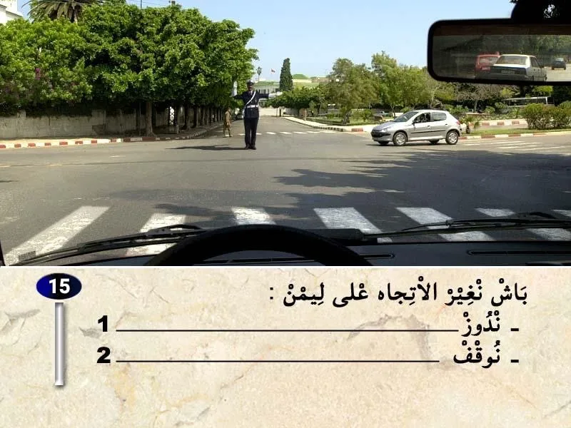
بيّن الجواب
الجواب الصحيح: 2
عندما يكون شرطي المرور يعطيني بالظّهر أو يقف أمامي مباشرة فهذا يعني الوقوف بالنسبة لي ويجب عليّ الوقوف وانتظار إشارته للمرور. في هذه الحالة بما أن شرطي المرور يقف أمامي مباشرة فيجب عليّ الوقوف مهما كان اتّجاهي.
السؤال 16
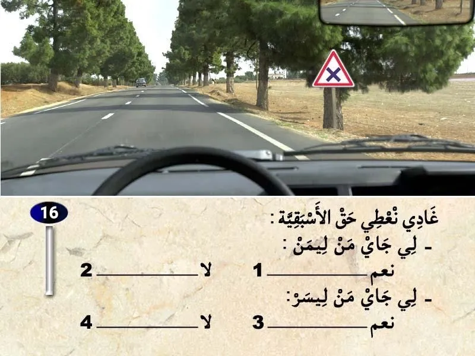
بيّن الجواب
الجواب الصحيح: 1 و 4
العلامة الطّرقية تعني إنتباه خطر ملتقى طرق على بعد 150 متر والأسبقية للعربات القادمة من اليمين. إذن في هذه الحالة سوف أقوم بإعطاء حق الأسبقية للعربات القادمة من اليمين فقط.
السؤال 17
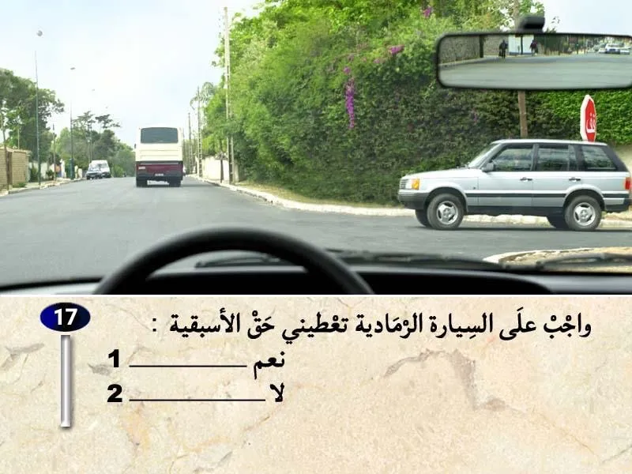
بيّن الجواب
الجواب الصحيح: 1
بما أنه السيّارة الرّمادية لديها علامة قف، فيجب عليها الوقوف وإعطاء حق الأسبقية للعربات القادمة من الجهة اليمنى واليسرى، إذن في هذه الحالة فإنه من الواجب على السيّارة الرّمادية إعطائي حق الأسبقية.
السؤال 18
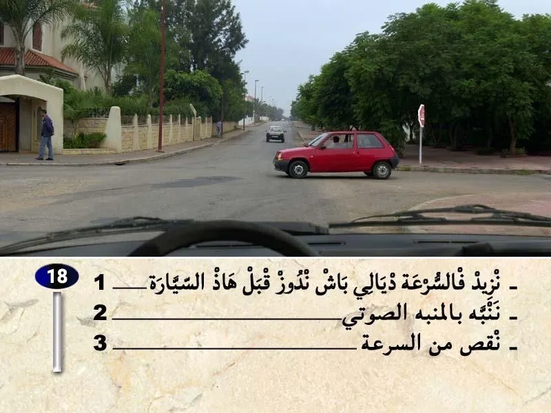
بيّن الجواب
الجواب الصحيح: 3
نتواجد قرب ملتقى الطّّرق، السيارة الحمراء يجب عليها إعطاء حق الأسبقية للعربات القادمة من اليمين واليسار بما أنه لديها علامة قف. في هذه الحالة بما أن السيّارة الحمراء قامت بمخالفة فلا يمكنني الزّيادة في السّرعة والمرور قبلها لأنه يوجد خطر الاصطدام بها، وبما أنّني أتواجد داخل المجال الحضري فلا يمكنني استعمال المنبّه الصوتي إلّا في حالة الخطر والضّرورة. إذن القرار المنطقي في هذه الحالة هو الإنقاص من السّرعة.
السؤال 19
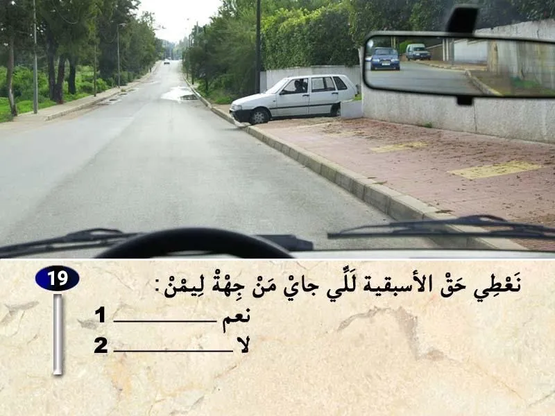
بيّن الجواب
الجواب الصحيح: 2
بما أن السيّارة تخرج من مكان خاص (كراج) فيجب عليها الوقوف وإعطائي حق الأسبقية في المرور أوّلا. إذن في هذه الحالة ليس من الواجب عليّ الوقوف والسّماح للسيّارة بالمرور.
السؤال 20
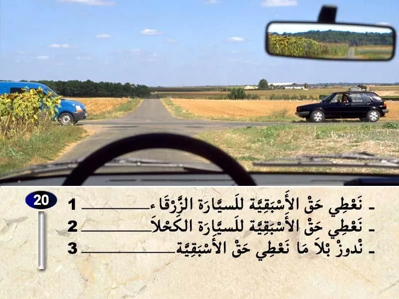
بيّن الجواب
الجواب الصحيح: 2
نتواجد قرب ملتقى طرق ولا توجد علامة طرقية تنظّم حركة السيّر، في هذه الحالة القاعدة تقول الأسبقية للعربات القادمة من الجهة اليمنى، إذن في هذا الملتقى الطّرقي سوف أقوم بالوقوف و إعطاء حق الأسبقية للسيارة السوداء المتواجدة على اليمين لأن الأسبقية لها فقط.
السؤال 21
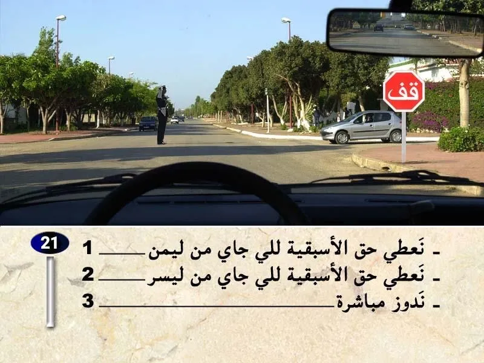
بيّن الجواب
الجواب الصحيح: 3
عندما يتواجد شرطي المرور فتلغى جميع الإشارات الضوئية و الإشارات الطّرقية، في هذه الحالة على الرّغم من وجود علامة قف فيجب علينا إتّباع وضعية الشّرطي، وضعية الشّرطي فهي بالجنب وهي تعني أنه يسمح لي بالمرور، إذن في هذه الحالة أقوم بالمرور مباشرة.
السؤال 22
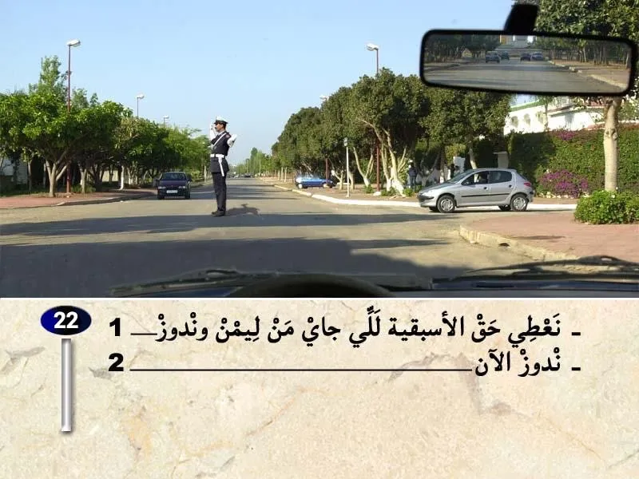
بيّن الجواب
الجواب الصحيح: 2
وضعية شرطي المرور فهي بالجنب وهي تعني أنه يسمح لي بالمرور، إذن في هذه الحالة أقوم بالمرور أنا الأول.
السؤال 23
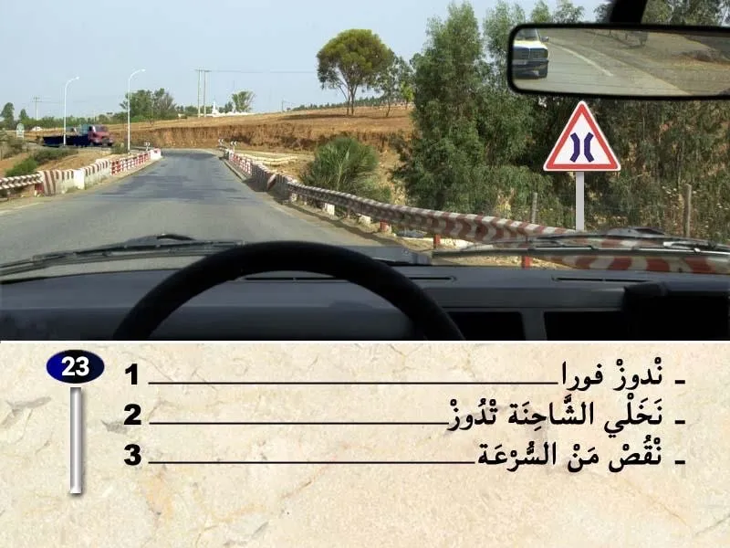
بيّن الجواب
الجواب الصحيح: 1 و 3
العلامة الطّرقية تعني انتباه خطر طريق ضيّقة على الجانبين (قنطرة)، توجد شاحنة قادمة من الأمام ولكي يكون التّقابل سهل فالقاعدة تقول عندما نتواجد في طريق ضيّقة ونتقابل مع عربة يتجاوز طولها 7 أمتار أو يتجاوز عرض العربة 2 أمتار فيجب عليها الوقوف والسّماح للعربة الأخرى بالمرور أوّلا. إذن في هذه الحالة أقوم بالمرور أنا الأول وأقوم بالإنقاص من السّرعة بما أنه يوجد خطر طريق ضيّقة.
السؤال 24
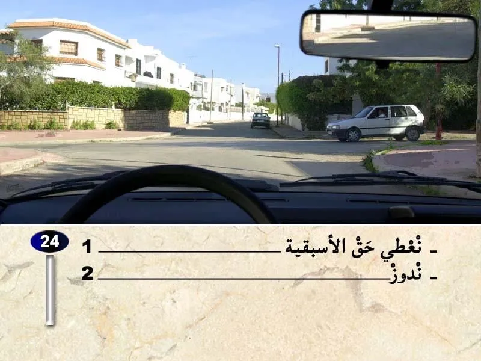
بيّن الجواب
الجواب الصحيح: 1
نتواجد قرب ملتقى طرق ولا توجد علامة طرقية تنظّم حركة السيّر، في هذه الحالة القاعدة تقول الأسبقية للعربات القادمة من الجهة اليمنى، إذن في هذا الملتقى الطّرقي سوف أقوم بالوقوف و إعطاء حق الأسبقية للسيارة البيضاء المتواجدة على اليمين لأن الأسبقية لها.
السؤال 25
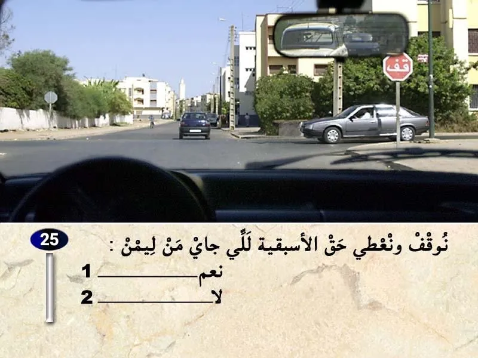
بيّن الجواب
الجواب الصحيح: 1
أتواجد قرب ملتقى الطّرق، توجد علامة قف وهذا يعني على أن الوقوف إجباري في ملتقى الطّرق، وبما أنه يوجد لديّ علامة قف فيجب عليّ في هذه الحالة الوقوف وإعطاء حق الأسبقية للسيارات القادمة من الجهة اليمنى وكذلك السيارات القادمة من الجهة اليسرى. إذن يجب عليّ الوقوف وإعطاء حق الأسبقية للقادمين من الجهة اليمنى.
السؤال 26
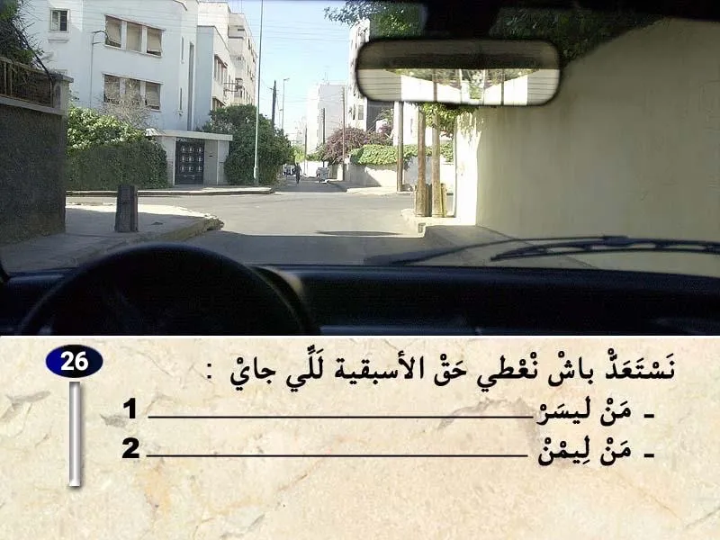
بيّن الجواب
الجواب الصحيح: 2
نتواجد قرب ملتقى طرق ولا توجد علامة طرقية تنظّم حركة السيّر، في هذه الحالة القاعدة تقول الأسبقية للعربات القادمة من الجهة اليمنى، إذن في هذا الملتقى الطّرقي سوف أقوم بالاستعداد لكي أعطي حق الأسبقية للعربات القادمة من اليمين فقط.
السؤال 27
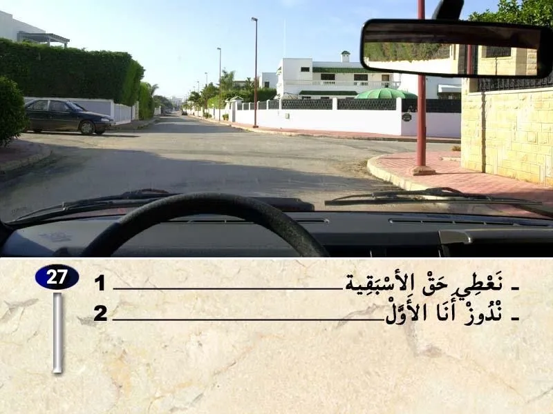
بيّن الجواب
الجواب الصحيح: 2
نتواجد قرب ملتقى طرق ولا توجد علامة طرقية تنظّم حركة السيّر، في هذه الحالة القاعدة تقول الأسبقية للعربات القادمة من الجهة اليمنى فقط، إذن في هذا الملتقى الطّرقي يجب على السيّارة المتواجدة على اليسار أن تقوم بالوقوف وإعطائي حق الأسبقية لأنني أتواجد على يمينها. إذن أقوم بالمرور أنا الأول.
السؤال 28
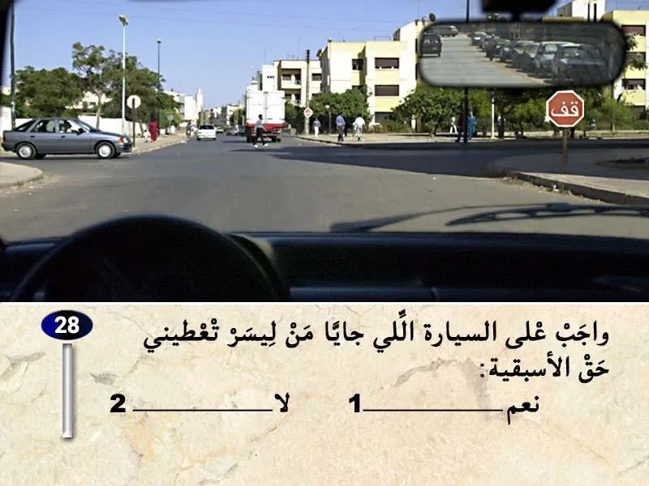
بيّن الجواب
الجواب الصحيح: 2
أتواجد قرب ملتقى الطّرق، توجد علامة قف وهذا يعني على أن الوقوف إجباري في ملتقى الطّرق، وبما أنه يوجد لديّ علامة قف فيجب عليّ في هذه الحالة الوقوف وإعطاء حق الأسبقية للسيارات القادمة من الجهة اليمنى وكذلك السيارات القادمة من الجهة اليسرى. إذن ليس من الواجب على السيّارة القادمة من اليسار إعطائي حق الأسبقية.
السؤال 29
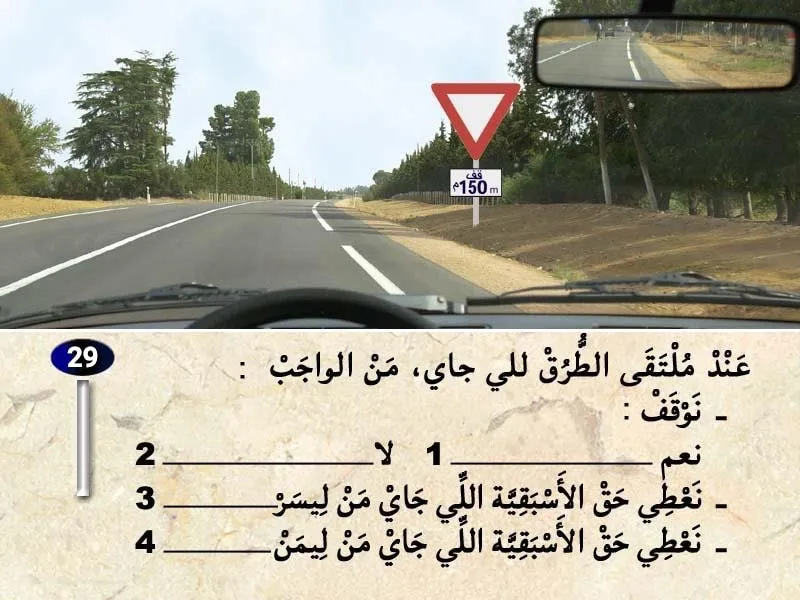
بيّن الجواب
الجواب الصحيح: 1 و 3 و 4
العلامة الطّرقية تعني ليس لديّ حق الأسبقية وأيضا توجد علامة قف بعد 150 متر في ملتقى الطّرق القادم. إذن في ملتقى الطّرق القادم من الواجب عليّ الوقوف بما أنه لديّ علامة قف فيه،وبما أنه ليس لدي حق الأسبقية إذن من الواجب عليّ إعطاء حق الأسبقية للعربات القادمة من اليمين وكذلك من اليسار.
السؤال 30
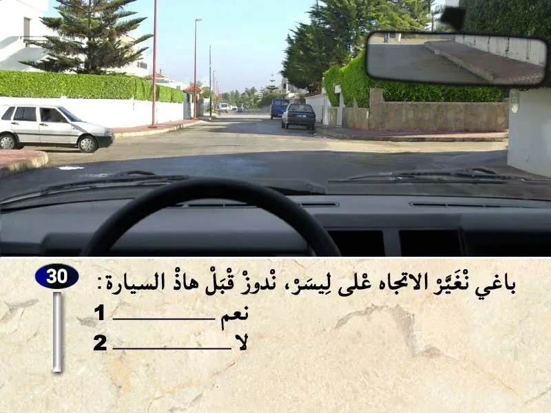
بيّن الجواب
الجواب الصحيح: 1
نتواجد قرب ملتقى طرق ولا توجد علامة طرقية تنظّم حركة السيّر، في هذه الحالة القاعدة تقول الأسبقية للعربات القادمة من الجهة اليمنى فقط، إذن في هذا الملتقى الطّرقي يجب على السيّارة البيضاء المتواجدة على اليسار أن تقوم بالوقوف وإعطائي حق الأسبقية لأنني أتواجد على يمينها. إذن أقوم بالمرور قبل هذه السيّارة البيضاء.
السؤال 31
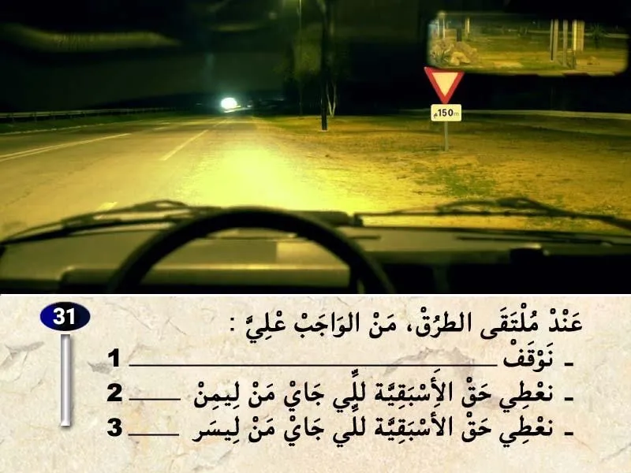
بيّن الجواب
الجواب الصحيح: 2 و 3
العلامة الطّرقية تعني ليس لي حق الأسبقية في ملتقى الطّرق القادم الذي يتواجد على بعد 150 متر، إذن في ملتقى الطّرق القادم ليس من الواجب الوقوف لأنه لا توجد لدي علامة قف في ملتقى الطّرق القادم، العلامة الطّرقية تعني على أنه يجب عليّ إعطاء حق الأسبقية للعربات القادمة من الجهة اليمنى وكذلك من الجهة اليسرى.
السؤال 32
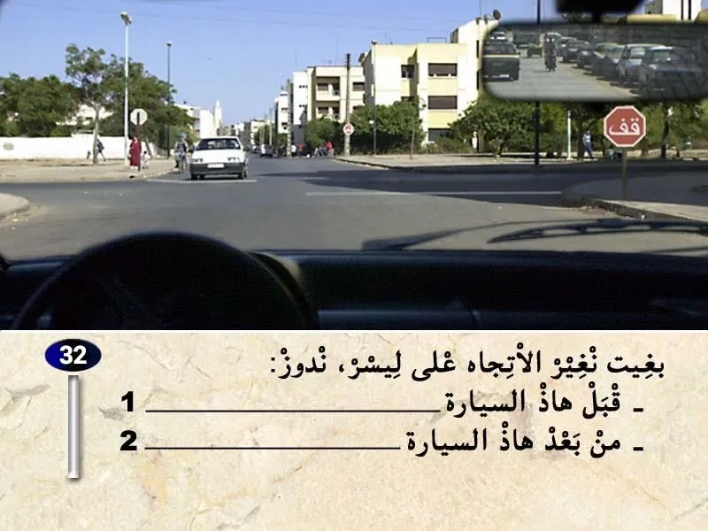
بيّن الجواب
الجواب الصحيح: 2
نتواجد قرب ملتقى الطرق، لدي علامة قف والسيّارة التي أمامي لديها أيضا علامة قف، في هذه الحالة بما أنني أريد تغيير الاتّجاه إلى اليسار إذن سوف تصبح السيّارة البيضاء على يميني وفي هذه الحالة يجب عليّ السماح لها بالمرور أولا. إذن إذا أردت تغيير الاتّجاه إلى اليسار أقوم بذلك بعد مرور السيّارة البيضاء.
السؤال 33
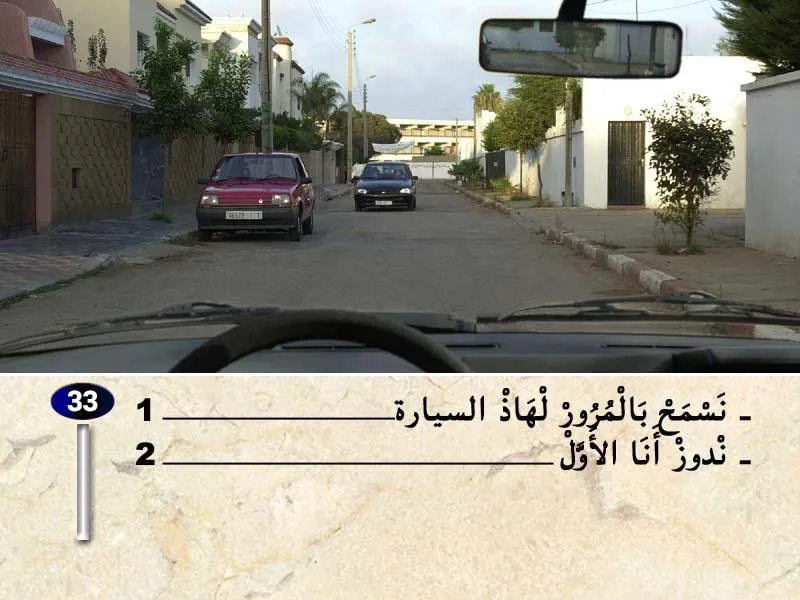
بيّن الجواب
الجواب الصحيح: 2
بما أنه يوجد عائق (سيارة) في جهة السيّارة التي تقابلني إذن يجب عليها أن تقف وتنتظرني أن أقوم بالمرور أنا أولا، لأنه أنا ليس لديّ عائق في جهتي. إذن أقوم بالمرور أنا الأول.
السؤال 34
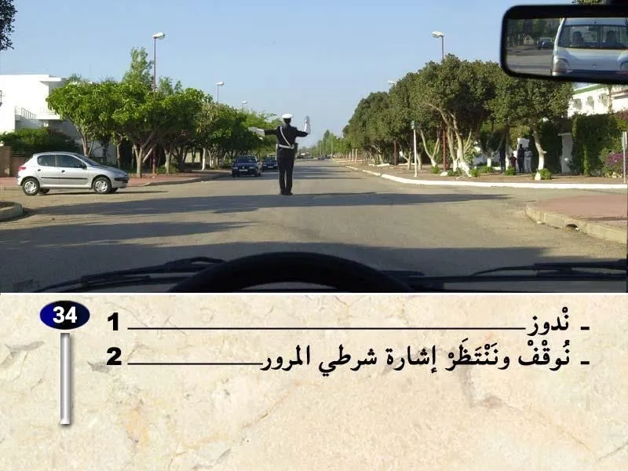
بيّن الجواب
الجواب الصحيح: 2
عندما تكون وضعية شرطي المرور بالظّهر مثل الصورة فهذا يعني أنه يجب عليّ الوقوف وانتظار إشارة شرطي المرور.
السؤال 35
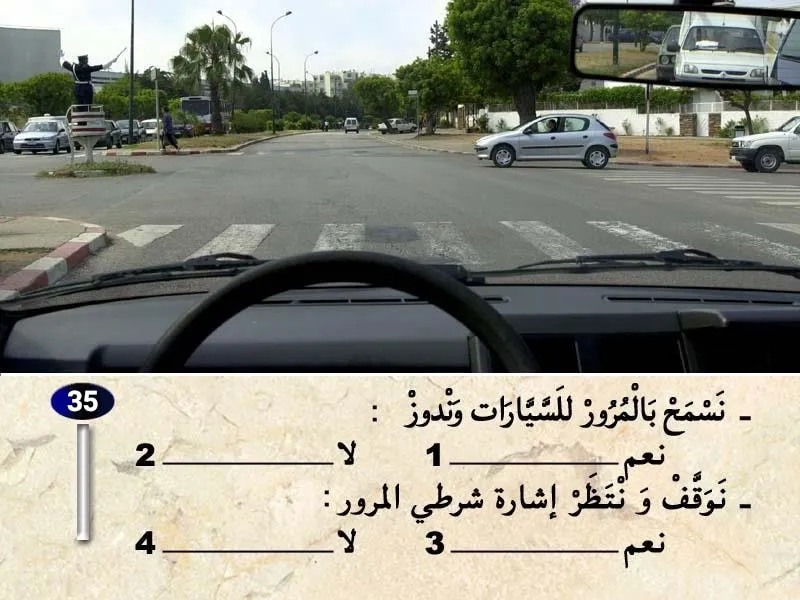
بيّن الجواب
الجواب الصحيح: 2 و 3
يوجد شرطي مرور في وسط ملتقى الطّرق لكي يقوم بتنظيم حركة السّير، في هذه الحلة القاعدة لا تتغيّر، عندما تكون وضعية الشّرطي بالظّهر كما الصورة فيجب عليّ الوقوف. إذن في هذه الحالة يجب عليّ السّماح بالسيّارة بالمرور (ولا أقوم بالمرور بعد ذلك)، بل يجب عليّ أن أقوم بالوقوف وأنتظر إشارة شرطي المرور لكي أقوم بالمرور.
السؤال 36
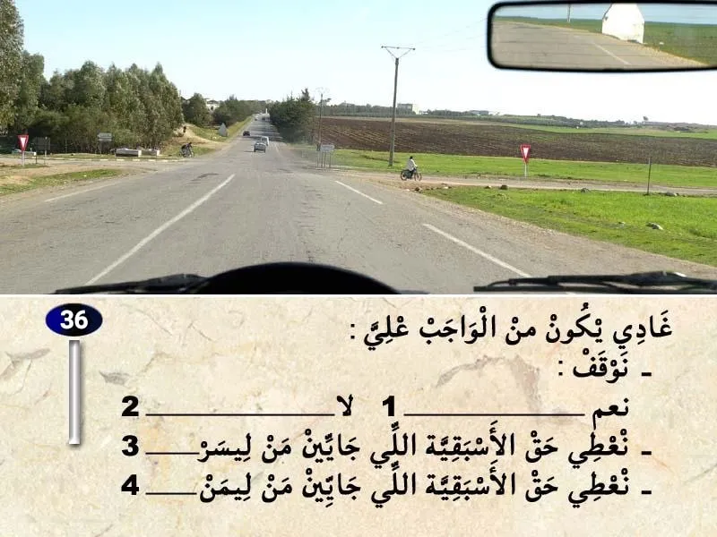
بيّن الجواب
الجواب الصحيح: 2
كما نلاحظ فالطّريق على اليمين وعلى اليسار في ملتقى الطّرق لديهم علامة طرقية تعني أنه ليس لديهم حق الأسبقية إذن الأسبقية لي في ملتقى الطّرق القادم أي أنني في طريق ذات أولوية. إذن في هذه الحالة ليس من الواجب عليّ الوقوف ولا أقوم بإعطاء حق الأسبقية للسيارات القادمة من اليمين وكذلك من اليسار.
السؤال 37
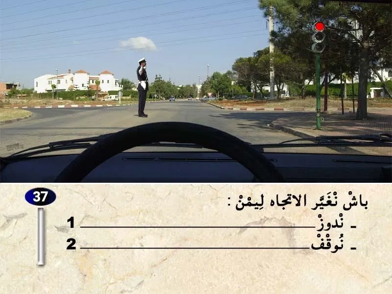
بيّن الجواب
الجواب الصحيح: 1
عندما يتواجد شرطي المرور فتلغى جميع الإشارات الضوئية و الإشارات الطّرقية، في هذه الحالة على الرّغم من أن الإشارة الضوئية حمراء فيجب علينا إتّباع وضعية الشّرطي، وضعية الشّرطي تعني على أنه يسمح لي بالمرور، إذن لكي أقوم بتغيير الاتّجاه لليمين فأقوم بالمرور.
السؤال 38
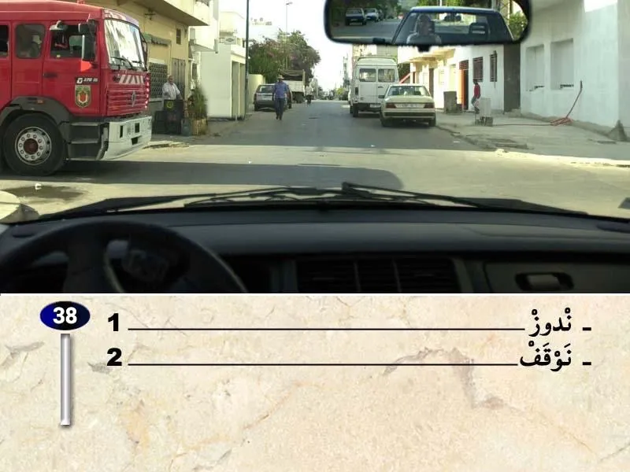
بيّن الجواب
الجواب الصحيح: 1
بما أن سيارة الإطفاء لا تستعمل إشارات التّنبيه فهي تعتبر في هذه الحالة عربة عادية مثل باقي العربات وليس لها حق الأسبقية، إذن بما أنني أتواجد على يمين سيارة الإطفاء ولا توجد علامات طرقية تنظّم حركة السّير فيجب على سيارة الإطفاء أن تعطيني حق الأسبقية، إذن في هذه الحالة أقوم بالمرور أولا.
السؤال 39
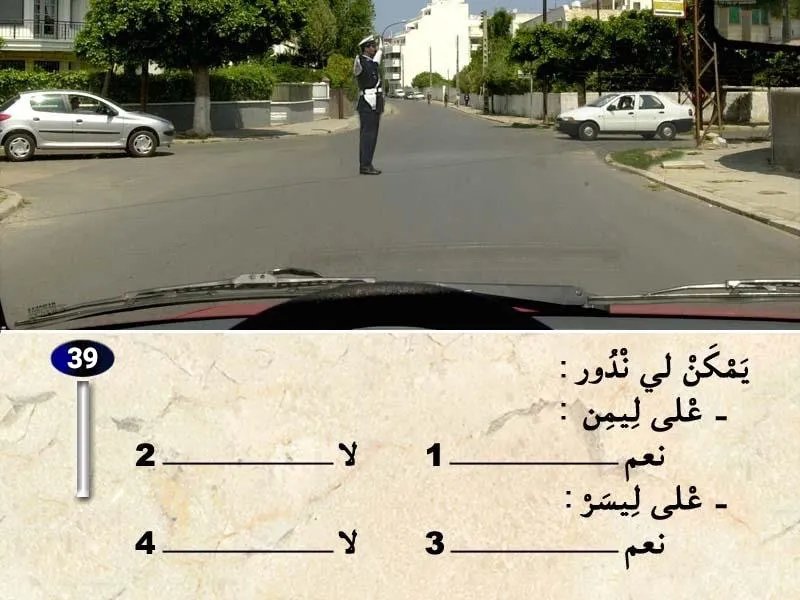
بيّن الجواب
الجواب الصحيح: 1 و 3
وضعية شرطي المرور الموضّحة في الصورة تسمح لي بالمرور (فاش يكون عاطيني بالجنب ندوز وفاش يكون عاطيني بوجهو ولا ظهرو خاص نوقف)، السيارت المتواجدة على اليمين واليسار فهي واقفة لان وضعية الشرطي بالنسبة لهم تعني أن عليهم الوقوف. إذن يمكنني المرور على اليمين أو على اليسار بما أن شرطي المرور يسمح لي بالمرور.
السؤال 40
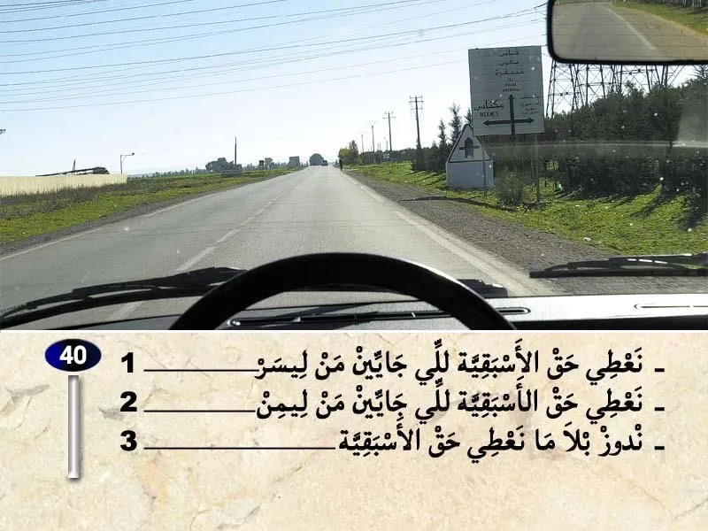
بيّن الجواب
الجواب الصحيح: 3
العلامة الطّرقية تعني انتباه طريق ذات أولوية (هذا يعني الأسبقية لي)، بما أننا نتواجد خارج المجال الحضري فبعد 150 متر سوف نجد ملتقى طرق والأسبقية فيه سوف تكون لي. إذن سوف أقوم بالمرور دون أن أعطي حق الأسبقية.